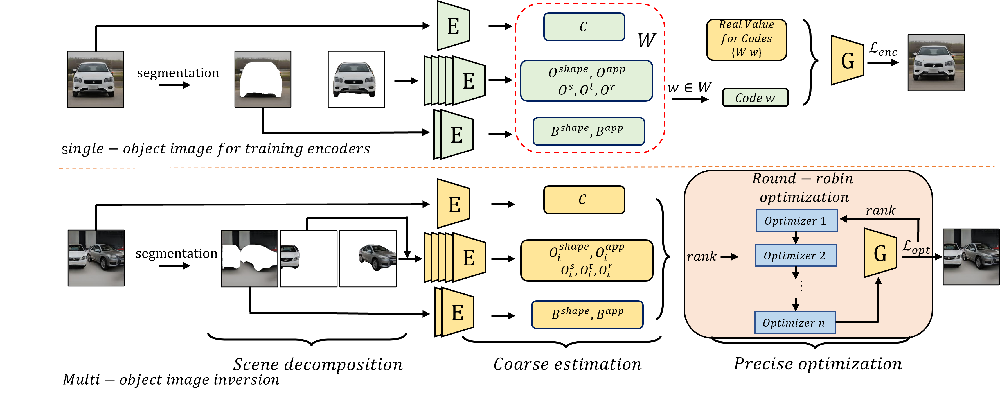

3D-GOI: 3D GAN Omni-Inversion for Multifaceted and Multi-object Editing
ECCV 2024
Haoran Li1, 2, Long Ma1, 2, Haolin Shi1, 2, Yanbin Hao1, 2, Yong Liao1, 2*, Lechao Cheng3, Pengyuan Zhou4*
1 University of Science and Technology of China
2 CCCD Key Lab of Ministry of Culture and Tourism
3 Hefei University of Technology
4 Aarhus University
Abstract
The current GAN inversion methods typically can only edit the appearance and shape of a single object and background while overlooking spatial information. In this work, we propose a 3D editing framework, 3D-GOI, to enable multifaceted editing of affine information (scale, translation, and rotation) on multiple objects. 3D-GOI realizes the complex editing function by inverting the abundance of attribute codes (object shape/ appearance/ scale/ rotation/ translation, background shape/ appearance, and camera pose) controlled by GIRAFFE, a renowned 3D GAN. Accurately inverting all the codes is challenging, 3D-GOI solves this challenge following three main steps. First, we segment the objects and the background in a multi-object image. Second, we use a custom Neural Inversion Encoder to obtain coarse codes of each object. Finally, we use a round-robin optimization algorithm to get precise codes to reconstruct the image. To the best of our knowledge, 3D-GOI is the first framework to enable multifaceted editing on multiple objects. Both qualitative and quantitative experiments demonstrate that 3D-GOI holds immense potential for flexible, multifaceted editing in complex multi-object scenes.
Approach
The overall framework of 3D-GOI. As shown in the upper half, the encoders are trained on single-object scenes, each time using to predict one , while other codes use real values. The lower half depicts the inversion process for the multi-object scene. We first decompose objects and background from the scene, then use the trained encoder to extract coarse codes, and finally use the round-robin optimization algorithm to obtain precise codes. The green blocks indicate required training and the yellow blocks indicate fixed parameters.
Citation
@article{li20233d,
title={3D-GOI: 3D GAN Omni-Inversion for Multifaceted and Multi-object Editing},
author={Li, Haoran and and Ma, Long and Shi, Haolin and Hao, Yanbin and Liao, Yong and Cheng, Lechao and Zhou, Pengyuan},
journal={arXiv preprint arXiv:2311.12050},
year={2023}
}{kind=link}